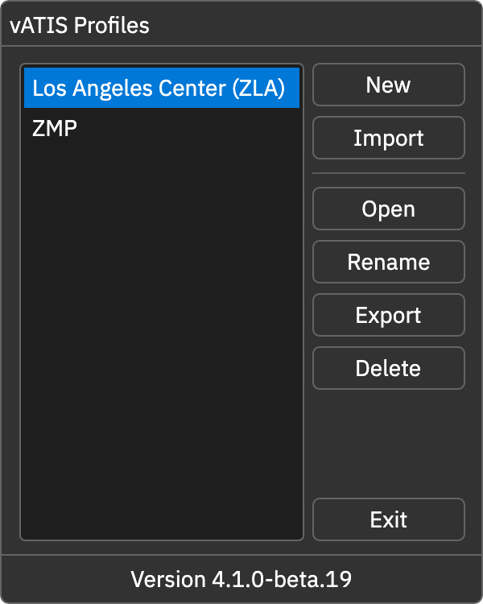

配置文件
启动客户端后首先出现配置列表，首次使用可能为空。通常导入 CAN 管制单位提供的配置。选中配置点击 Open（打开），或双击名称，进入主窗口。
新建、重命名与删除
- New：输入名称并确认，创建配置。
- Rename：修改列表中的显示名称。
- Delete：删除选中的配置；需要保留时先导出。
导入与导出
Import 可导入配置 JSON；使用 WAV 语音包的配置还可以导入带音频的 ZIP。导入后会出现在列表中。
Export 导出所选配置。若席位使用 WAV 语音包，会生成包含配置和所需音频片段的 ZIP；导入者无需另行复制完整语音包。
原版配置可以用作编辑基础，但需要核对 CAN 频率、模板、语音来源及数据源。它不包含可直接复用的原版服务权限。
通过命令行打开
.\atis-for-can.exe --profile 3068994d-f5a0-46db-a5d1-9b0fb8e67cc5
查找配置 ID
打开 %LOCALAPPDATA%\ceruleanavi.atis-for-can\Profiles，JSON 文件名即配置 ID。查看文件中的 name 可确认配置名称。主窗口或配置列表的 Ctrl+Shift+O 可打开数据目录。
导入文件后立即打开
.\atis-for-can.exe --import-profile "C:\Profiles\CAN-Guangzhou.json"
与界面的 Import 不同：
- 保留文件中的 ID，替换已安装的同 ID 配置；界面 Import 创建新 ID。
- 仅接受配置 JSON，不接受语音包 ZIP。
- 导入失败时回到配置列表。
分享配置
只分享导出的配置或语音包，不要分享包含个人登录资料的 AppConfig.json。公共配置中的示例账号、密码和令牌应留空。
操作截图参考
以下为上游原版截图，保留英文标签。用于定位操作；品牌、登录字段与网络行为以本页 CAN 说明为准。
